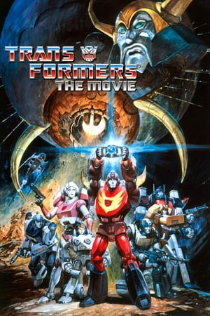
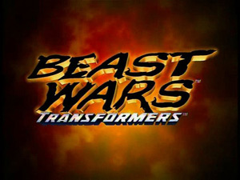
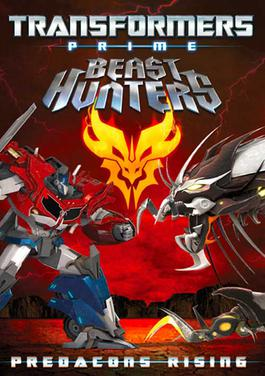
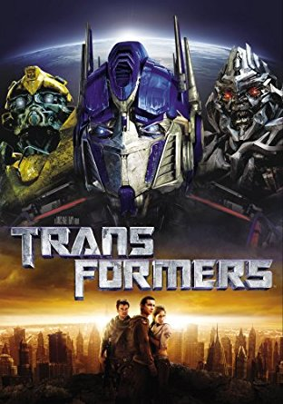

- Genero:Animacion
- Puntaje:9
- Duracion:85
After the death of Optimus Prime during a devastating assault on Autobot City, the remaining Autobots are pursued by Galvatron, the regenerated form of Megatron and servant of Unicron, a planet-devouring Transformer who sets out to consume Cybertron.
- Genero:Animacion
- Puntaje:10
- Duracion:24
The series featured the Maximals and Predacons and they had traveled back in time before the original series began and were actually on a prehistoric Earth some time in between when Optimus Prime and Megatron first crash-landed on Earth and the time when they awoke
- Genero:Animacion
- Puntaje:8
- Duracion:24
After the Autobots victory on Earth, Unicron returns in possession of Megatron's body with the intent on destroying Cybertron, forcing Autobots, Decepticons, and Predacons to form an unlikely alliance to counter this threat.
- Genero:Ciencia Ficcion
- Puntaje:9
- Duracion:143
A teenager who gets caught up in a war between the heroic Autobots and the villainous Decepticons, two factions of alien robots who can disguise themselves by transforming into everyday machinery, primarily vehicles.